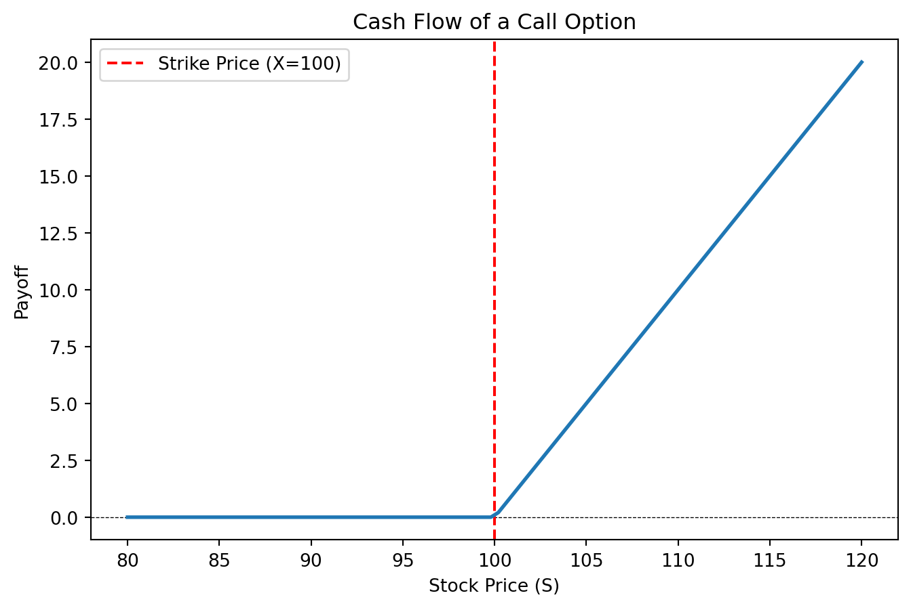
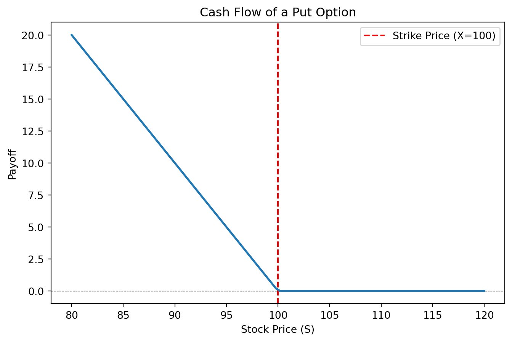
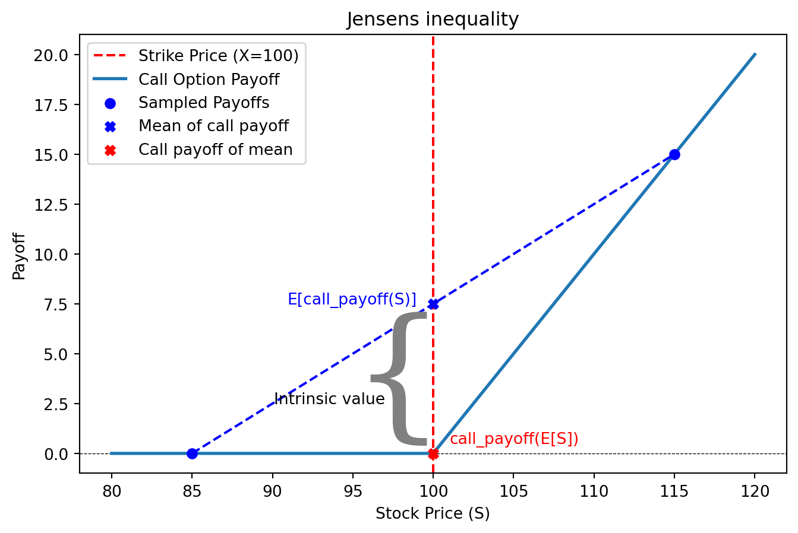
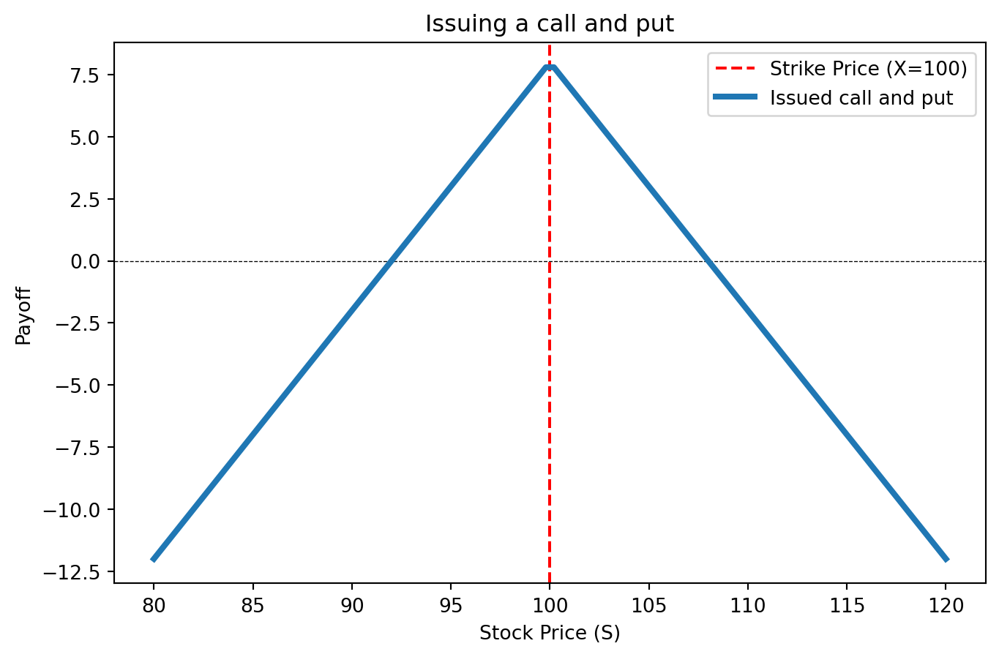

An option is a right but not an obligation to buy or sell an asset for a certain price. Options can be used for both hedging as well as speculation.
Options are a type of derivatives. A derivative is an asset where the price is determined completely by other assets, such as the share price of a company. Hence the value of a derivative is a function of the asset’s value. This is the case for options too: If you know the value of the share, you can immediately determine the exercise value of the option.
Option Value
The cash flow from an option
There are mainly two types of options - put and call options. A call option gives you the right to buy one share at a fixed price sometime in the future. Let us say that the price agreed upon for an Equinor share is 100. This is called the strike price or exercise price. If the share price is 110 today, you can take advantage of your right to buy it for 100 and sell it in the market for 110. The value of the option is then 10.
However, if the market price is 90, it would be pointless to buy the stock for 100. Since you do not have any obligation to buy it, you would not exercise your right since that would lead to a certain loss. Therefore, the option price can never be negative, since the right to buy will never be exercised if it leads to a loss. Hence, if C is the value of the call, S the value of the stock, and X the strike price at the terminal date, we have
\[
C = \max(S - X, 0)
\tag{1}\]
The share price is 110 option holder is thus left with \[
= \max(110-100, 0) = 10
\tag{2}\] But if the price falls to 90, the option loses its entire value \[
= \max(90-100, 0) = 10
\tag{3}\]
Let us draw this up in a chart where X is the strike price, with a python function giving the maximum betseen the current share price and \(S-X\)
import numpy as npimport matplotlib.pyplot as pltX =100# strike price# Plot the cash flowdef create_canvas(title): S = np.linspace(80, 120, 100)# Create figure and axis objects fig, ax = plt.subplots(figsize=(8, 5))# Plot the call option payoff ax.axhline(0, color='black', linewidth=0.5, linestyle='--') ax.axvline(X, color='red', linestyle='--', label=f"Strike Price (X={X})")# Labels and title ax.set_xlabel("Stock Price (S)") ax.set_ylabel("Payoff") ax.set_title(title) ax.legend()return ax, S # Return figure, axis, and stock priceax, S = create_canvas("Cash Flow of a Call Option")call_payoff = np.maximum(S - X, 0) #call option payoffax.plot(S, call_payoff, label="Call Option Payoff", linewidth=2)

Figure 1: Call option cash flow
Such drawings of the cash flow are called profit charts.
We have now examined how a call option works. A put option, on the other hand, is the right but not the obligation to sell an asset at a specified price. This means the option holder benefits from a falling share price and receives the difference between the market price S and the strike price X when the market price is lower than X. If the price is higher, the option has no value, and the owner gains nothing.
This is illustrated in Figure 2. To represent the put option, we simply modify the function from np.maximum(S - X, 0) to np.maximum(X - S, 0), reflecting the fact that the option gains value when the stock price decreases.
ax, S = create_canvas("Cash Flow of a Put Option")put_payoff = np.maximum(X - S, 0) #put option payoffax.plot(S, put_payoff, label="Put Option Payoff", linewidth=2)

Figure 2: Put option cash flow
Thus, we see that the immediate exercise value of an option is the difference between the share price and the exercise price X. In the case of a put option, there is no payment when the share price is greater than X, while for a call option, the option is worthless when the stock price is lower than X.
Important Concepts
In general, it is never advantageous to exercise an option early, before the expiration date. This is because an option always has some value beyond its immediate exercise value, as there is always a chance it will become more valuable. This is due to a principle known as “Jensen’s Inequality”. It states that the mean of a convex function is always higher than the function of the mean.
This is illustrated in Figure 3. Here, we see that if the stock price can take two values, 85 and 115, the option value at the mean of these two points is zero, since this corresponds to the exercise price. However, if we take the mean of the call function values, it is the average of 15 and 0, which equals 7.5. Hence, the mean of a convex function is higher than the function at the mean.
ax, S = create_canvas("Jensens inequality")call_payoff = np.maximum(S - X, 0) #call option payoffax.plot(S, call_payoff, label="Call Option Payoff", linewidth=2)# Generate two stock prices, one to the left and one to the right of the strike priceS_left = X -15# 15 units below strike priceS_right = X +15# 15 units above strike price# Compute corresponding payoffspayoff_left = np.maximum(S_left-X, 0)payoff_right = np.maximum(S_right - X, 0)# Compute mean stock price and corresponding mean payoffS_mean = (S_left + S_right) /2payoff_mean = (payoff_left + payoff_right) /2# Add scatter points illustrating the two sample payoffsax.scatter([S_left, S_right], [payoff_left, payoff_right], color='blue', label="Sampled Payoffs", zorder=3)# Draw a line between the two points to indicate the mean of payoffsax.plot([S_left, S_right], [payoff_left, payoff_right], color='blue', linestyle='dashed')# Scatter point for the payoff at the mean stock priceax.scatter(S_mean, payoff_mean, color='blue', marker='X', label="Mean of call payoff", zorder=4)ax.scatter(S_mean, 0, color='red', marker='X', label="Call payoff of mean", zorder=4)# Annotate pointsax.text(S_mean -1, payoff_mean, "E[call_payoff(S)]", ha='right', fontsize=10, color='blue')ax.text(S_mean +0.7, 1.6, "{", ha='right', fontsize=92, color='grey', fontweight='ultralight', fontname="serif")ax.text(S_mean -3, 2.5, "Intrinsic value", ha='right', fontsize=10)ax.text(S_mean +1, 0.5, "call_payoff(E[S])", ha='left', fontsize=10, color='red')# Show updated plotax.legend()

Figure 3: Jensens inequality illustrated by a call option
This means that if there is a long time until the expiration date, an option will still have some value, even if the price is lower than the exercise price, because there is always a possibility that the option will become profitable before it expires. As a result, the value of an option is higher before the expiration date than at the expiration date.
The value of a call option before expiration is denoted as \(C_t\), while the value of a put option is denoted as \(P_t\). Sometimes, it is useful to have a general symbol for the option price, regardless of whether it is a put or a call. In such cases, the general value of an option or derivative is represented as \(f_t\). The stock price is denoted as \(S_t\), and the exercise price is \(X\) (exercise value). The variable \(t\) represents the time since the option was issued, measured in years. For example, if the option was issued three months ago, then \(t = \frac{1}{4}\).
The buyer has the right to exercise the option for a limited period. The time when the option expires is called the expiration date and is represented by capital \(T\). If the option lasts for one year, then \(T = 1\). The exercise values of the options at expiration are denoted as \(C_T\) or \(P_T\).
Black and Scholes
There exists a method to directly calculate the value of options. We will not go into details now, but a formula was discovered by [@scholes1973pricing] and [@merton1971theory]. However, it later turned out that their discovery was very similar to earlier work by [@bachelier1900]. In short, the option value is the present value of the expected cash flow from the option, assuming that the underlying asset earns a risk-free interest rate. The Black and Scholes option price is calculated in Figure 4.
Figure 4: Call option and Black&Scholes option price
Problem: * Change the Black and Scholes figure to show a put option. The formula for the Black and Scholes put is \[
P(S, X, T, r, \sigma) = X e^{-rT} \Phi(-d_2) - S \Phi(-d_1)
\tag{4}\] where: where \[
d_1 = \frac{\ln(S / X) + \left(r + \frac{1}{2} \sigma^2 \right)T}{\sigma \sqrt{T}}
\tag{5}\] and \[
d_2 = d_1 - \sigma \sqrt{T}
\tag{6}\]
\(\Phi\) is the cumulative standard normal distribution function.
European and American options
Sometimes an option can be exercised at any time up to the terminal date. We therefore distinguish between two types of options:
American option: The option holder can choose whether to exercise the option at any time before the terminal date.
European option: The option can only be exercised on the terminal date.
In addition to buying options, investors may also sell options short in the market, a process known as issuing options. In this case, the cash flow will be the exact opposite of what the buyer receives, as illustrated below. The buyer (owner) receives the same cash flow as previously shown, while the seller has an obligation rather than a right. Therefore, the issuer’s cash flow is a mirror image of the buyer’s.
Put-call parity
As you may have noticed, a put option always provides a payout when a call option does not (and vice versa), assuming the strike price is the same. By combining both types of options, an investor can create a cash flow proportional to the share price, regardless of how the share price changes. This relationship between a put, a call, and the share price is known as put-call parity:
\[
S_{t} - NPV_{t}(X) = C_{t} - P_{t}
\tag{7}\]
Where \(NPV_{t}(X)\) is the present value at time \(t\). As we see, this formula applies at any time, including before the terminal date \(T\).
In the figure below, we see the cash flow for a call option (\(+C_t\)) and an issued put (\(-P_t\)) plotted. The dotted line represents the combined value of these two positions, that is, the value of \(C_t - P_t\), along with the stock price \(S\) itself.
If the date is before the terminal date, we use the present value of the exercise price at that time, \(NPV_{t}(X)\). However, for now, we assume the terminal exercise price \(X\) that has been used throughout.
The call-put and \(S - X\) positions in Figure 5 are shifted up and down by 1 to make all lines visible.
The minus sign before the put option means that we hold it short. This means that we sell it. In financial markets, we do not need to own an asset to sell it. Instead, we can short it, which involves borrowing the asset and later returning it.
For example, we may borrow a stock for three months, sell it in the market, and hope that its price decreases before we buy it back to return it. Shorting means that we hold a negative amount of the asset and are speculating on a price decrease.
For options, short selling can also mean issuing the option. Most online brokers allow traders to sell options without owning them first, provided that they post some collateral. This effectively means that the trader issues the option.
Combining options
By combining a put and a call, it is possible to replicate the cash flows of buying a share and taking out a loan. Additionally, one can buy and sell puts and calls with different exercise prices to create customized cash flows at different share prices.
In Figure 6, we have plotted the net cash flow from issuing both a call option (call) and a put option (put).
ax, S = create_canvas("Issuing a call and put")call_payoff = np.maximum(S - X, 0) #call option payoffput_payoff = np.maximum(X-S, 0) #call option payoffax.plot(S, -call_payoff-put_payoff+8, label="Issued call and put", linewidth=3)ax.legend()

Figure 6: Issued call and put
As you can see, the options are slightly shifted up compared to how we have drawn them before. The reason for this is that we have now included the sales price of the options (the intrinsic value), which varies depending on the share price at the time. In this example, the share price is higher than the exercise price.
Since we have taken the intrinsic value of the option into account, we see that the option will provide a cash flow as long as the stock price is between a and b. This combination can therefore be used to bet that the price of a stock will remain within a certain range. For example, if one expects Telenor’s share price to be exactly 100 in six months, one could issue a put and a call between 95 and 105.
Similarly, options can be used to bet that the price will deviate from a specific target, either positively or negatively. You can draw the cash flow for this case yourself. The only limit to the cash flows that can be created with options is one’s imagination.
Problem:
Try different combinations of call and put options, including those with different exercise values, to create sophisticated cash flows.
Pricing of options
So, how much is an option worth? The relationship between an option’s value and the underlying stock price allows for a formula that determines the value of the right the option represents. This formula was discovered in the early 1970s and is known as the Black and Scholes option-pricing formula.
This is one of the most useful inventions in finance and is used daily in global financial markets. The economists who developed the formula were awarded the Nobel Prize in 1997 for their work. We will return to the Black and Scholes formula later. First, we will explore how to price an option in a simplified world where the stock price can only move up or down.
Pricing of binomial options
We will now consider a simplified scenario where the share price can take only two values in the future. For example, assume that the Telenor share may either rise to 115 or fall to 95 from its current price of 100 kroner. The interest rate is 5%.
Further, assume that we need to determine the price of a call option with an exercise price of 105. This means that the owner has the right to receive 10 if the stock price rises, but nothing otherwise. Graphically, the problem can be represented as follows:
Option Value
The task is to determine the current option price, denoted as \(f_0\) in the figure above. We use \(f_0\) instead of \(c_0\) because we aim to develop a general pricing method that applies to both put and call options. In fact, this method can be used to price any derivative.
The key to solving this problem is recognizing that the same cash flow can be replicated by borrowing money to finance a fraction of the shares that the option delivers, regardless of whether the price goes up or down. The reason this replication is possible is that an option’s value is a function of the stock price. When the stock is worth 115, the option will always be worth 10. When the stock is worth 95, the option is always worthless. By substituting the stock price into this function, we can determine the value of the option.
Now, suppose we borrow money to purchase a certain number of shares per option, denoted by \(\Delta\). For example, if we buy half as many shares as options, then \(\Delta = \frac{1}{2}\). Since the stock price is 100, we buy shares worth:
\(100 \cdot \Delta = 50\) per option.
After half a year (\(T = \frac{1}{2}\)), we must repay the loan with interest, so the total repayment amount will be:
\(100 \cdot 1.05^{\frac{1}{2}} \cdot \Delta\).
If the share price rises, our account balance will show a surplus of:
\[
Δ ∙ (115 - 100 ∙ 1.05^½)
\tag{8}\]
Similarly, we receive 10 on the option if the stock price goes up. If we buy the option for \(f_0\) today and fund it with a loan equal amount \(f_0\), we will next year have:
\[
10 - f_0 ∙ 1.05^½
\tag{9}\]
We can now select an appropriate proportion of shares Δ so that these two transactions provide identical cash flows. This means that we can find a fraction of shares Δ so that the leveraged purchase of Δ shares give the same return as a similar purchase of the option by solving the equation: \[
Δ ∙ (115 - 100 ∙ 1.05^½) = 10 - f_0 ∙ 1.05^½
\tag{10}\]
for Δ. If the stock goes down, we can reason in exactly the same way. We get a loss of
\(Δ ∙ (95 - 100 ∙ 1.05^{\frac{1}{2}})\)
on the share and a loss of
\(0 - f_0 ∙ 1.05^{\frac{1}{2}}\)
on the option. We require that the investments should provide the same return, so we can set an equality between them:
We now have two relatively simple equations with two unknowns, Δ and \(f_0\). Solving these equations, we find that
\(Δ = \frac{1}{2}\)
and
\(f_0 ≈ 3.645\).
What we have done is find a combination of loans and equity investments that produce the same return as an equivalent position in the option. This is the fundamental principle behind all option pricing.
Thus, it is possible to achieve the same cash flows as the option by holding a fraction Δ of the share. This principle applies generally—an option can always be replicated by holding a portion of the stock. In fact, many banks profit by issuing options and hedging them through this replication strategy.
A general binomial formula
When the stock and option can only take two values, we call this the binomial option pricing model. While we could use the method above to calculate the option price every time, it is much easier to apply a more general formula. Let us introduce the following notation:
Today
Stock up
Stock down
The share price
\(S_0\)
\(S_u\)
\(S_d\)
Option Value
\(f_0\)
\(f_u\)
\(f_d\)
Price Ratio\(S_T/S_0\)
\(u = S_u/S_0\)
\(d = S_d/S_0\)
Here, the subscripts u and d represent the up and down movements of the stock, respectively. We use a general variable \(f\) that can stand for both a put (\(P\)) and a call option (\(C\)). Additionally, we define two variables, \(u\) and \(d\), which represent the relative movement of the stock price when it increases or decreases.
For example, consider a put option with a strike price \(X = 105\), where the stock can either rise to \(S_u = 115\) or fall to \(S_d = 95\). In this case, we have:
\(f_u = 0\)
\(f_d = 10\)
\(u = 1.15\)
\(d = 0.95\)
Now, instead of using specific numbers, we generalize the approach from the previous section to find \(f_0\).
As before, the investor buys Δ shares and borrows \(Δ ∙ S_0\) to finance the purchase. Taking interest into account, the investor must repay
\(Δ ∙ S_0 ∙ (1 + r)^T\)
after one year. If the stock price rises, the investor can sell the stock for \(S_u\) in the market. The resulting profit will be:
\[
Δ∙(S_u - S_0 ∙(1+r)^T)
\tag{11}\]
This should match the profit gained from financing the option purchase with a loan. The option provides a payoff of \(f_u\) when the stock price rises. The loan that must be repaid consists of the initial purchase price plus interest, which is:
\(f_0 ∙ (1 + r)^T\)
Thus, the profit from the leveraged option purchase is:
\[
f_u - f_0∙(1+r)^T
\tag{12}\] As before, we choose now a share of shares so that the profits of shares and option price match. That is, we find a Δ such that: \[
Δ∙(S_u - S_0 ∙(1+r)^T) = f_u - f_0∙(1+r)^T
\tag{13}\]
Exactly the same argument applies if the stock goes down, so in that case we need only replace subscript u with d:
As in the previous section, we have two unknowns: the proportion of Δ shares and the option price \(f\), which can be easily solved. We will not go into the full derivation of the solution here. However, it turns out that the solution can be expressed in a relatively simple way using a variable \(q\), known as the “risk-neutral probability.” It is calculated as:
\[
q=\frac{(1+r)^T-d}{u-d}
\tag{15}\]
\(q\) is really just a tool for calculating the option price and is not actually a probability. However, it shares a key property with real probabilities in that it always lies between zero and one. We use it to compute an expectation in the same way as we do with normal probabilities.
It is called “risk-neutral” because if we apply it to the terminal values of the underlying stock (\(S_u\) and \(S_d\)), the expected value equals the current stock price plus interest:
Once we find \(q\), the option price is simply given as the present value of the expected option value at exercise, where we use the risk-neutral probability \(q\) as the probability of “up” and “down”.
We have discounted the expected value because \(f_u\) and \(f_d\) are not present cash flows but represent cash flows at the terminal time \(T\).
The process for calculating the price of a binomial option is as follows:
Calculate \(u\) and \(d\)
Calculate the risk-neutral probability \(q\) (Equation 13.2)
Calculate the present value of the expected option value using probability \(q\) (Equation 13.3)
Although we primarily use the risk-neutral probability to calculate simple binomial options, this method is actually remarkably general and can be used to determine prices for all types of derivatives—financial securities whose value depends on shares or other underlying assets. In general, the price of any derivative can be determined by defining a risk-neutral probability distribution.
Another important quantity is \(\Delta\), which represents the number of shares needed to replicate an option. It turns out that the delta is:
\[
\Delta=\frac{S_u-S_d}{f_u-f_d}
\tag{18}\]
The Δ is useful because it indicates how many shares you must buy to replicate the option. Since holding more shares increases risk, delta also serves as a measure of the risk inherent in the option.
What are options?
One of the most important properties of options is that they allow investors to place large bets in the market with relatively little capital. In our example, we saw that the purchase of an option only cost 3.64. However, if the share price increased, the option’s value would triple to 10! To achieve the same gain in value by buying stock directly, one would need to purchase approximately 0.42 shares, which would require an investment of:
\(0.42 \times 100 = 42\)
instead of just 3.64.
For investors with limited liquidity, options offer a significant advantage over directly buying shares. Recall how we derived the option price by comparing purchasing an option to buying a stock. An option can be thought of as a “package” consisting of a stock and a loan equal to the exercise price, where the stock is only sold if the net value is zero. Options provide a powerful way to leverage investments, and the leverage increases the further an option is from being profitable (“out of the money”). In our example, the investor could increase their exposure equivalent to:
\(100 / 3.645 \approx 27\) shares
for the price of just one share by buying more options.
On the other hand, this also means the risk increases significantly. If the option expires worthless, the entire investment is lost. Therefore, investors should be very cautious about allocating too much of their portfolio to options.
Options are commonly used in employee compensation schemes, particularly for middle and top management. By issuing stock options, companies provide management with strong incentives to increase the company’s value and, in turn, its share price—without significantly diluting shareholders’ interests today. However, in some cases, options have created excessive short-term incentives, leading to decisions that prioritize immediate gains over long-term company growth.
Multi-Period Options
It is not very realistic to assume that stock prices can only take two values in the future. In reality, stocks can be traded at many different price levels. It is therefore more reasonable to treat stock prices as a continuous variable. The binomial model can be improved by allowing for more than two price movements. One way to achieve this is by constructing a binomial tree that links multiple binomial models together.
For example, if the stock price reaches 120, it could represent the case where the price has increased for eight consecutive periods. By breaking down the last period in the tree into seven pairs (each sharing the last node with a neighbor), we create seven binomial options. Calculating the price in period six for each of these options gives us the value of all nodes in period six.
We can then continue solving for the option values in period five, and so on, until we determine the option value at period zero.